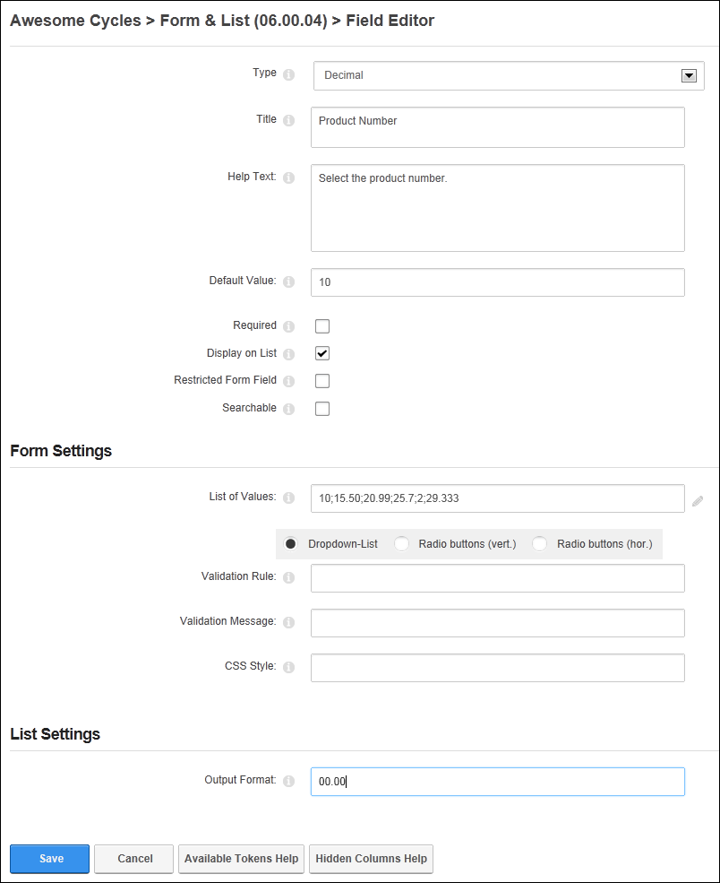
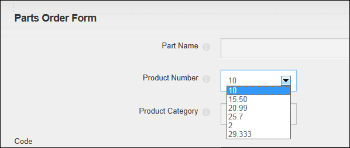
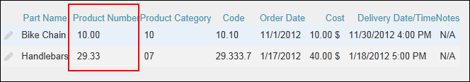

Adding a Decimal Field
How to add a decimal field to a form or list using the Form and List module. The decimal field allows form or list editors to enter a decimal number or choose from a predetermined list of numbers. The selected number is then displayed in the list. This tutorial assumes you are currently adding a decimal column to a form or list (See "Creating a Form or List") or editing an existing decimal record. See "Editing List or Form Columns"
Note: Both the "Default Value" and "List of Values" fields must be left blank to enable users to enter any decimal value.
- In the Title text box, enter a title that will be displayed on the form or list for this field.
- In the Help Text text box, enter a help message to assist users who are adding or editing the data for this field.
- In the Default Value text box, enter the default date to be displayed for this field. E.g. 10 - OR - Leave blank to display an empty field.
- At Required, if this field must be completed to submit the form or add a record to a list - OR - if this field as optional. This is the default setting.
- At Display on List, if this column is visible on the list in the normal grid view. This is the default setting. - OR - to set the field as visible to Administrators only.
- At Restricted Form Field, if this column is only visible to users/roles who have been added to the "Edit Also Restricted Columns" permission (See "Setting Form Permissions") - OR - if the column is visible to all users. This is the default setting.
- At Searchable, if this column searchable using the Search Options configured for this module. This setting has no influence whether the field gets indexed for the side wide search - OR - if the column is not included in the module search. This is the default setting.
- Go to the Form Settings section.
- In the List of Values choose one of the following options:
- Leave the field blank to allow users to enter any decimal value.
- Enter a list of decimal values that can be selected (E.g. 10;15.50;20.99;25.7;2;29.333) and then select how the list is displayed. Note: This setting removes the user's ability to enter other values.
- Dropdown-List: Display values in a drop down selection list. This is useful when there are a lot of values.
- Radio Buttons (Vert.: Display values in a vertical list with radio buttons.
- Radio Buttons (Hor.): Display values in a horizontal list with radio buttons.
- In the Validation Rule text box, enter the required input pattern using the "Regular Expression" language. See MSDN Library for more on expressions.
- In the Validation Message text box, enter the message to be displayed if the value entered is incorrect for the validation rule.
- In the CSS Style text box, enter the style to be applied on the text box or list control in the form or list.
- Go to the List Settings section.
- In the Output Format text box, enter the format that the decimal value will be displayed. E.g. 0.00 or 0.0
- Click the Save button to save the field and return to the Form & List Configuration page.

Adding/Editing a Decimal field

Selecting a pre-set decimal value on a form or list

The Decimal field displayed in a list